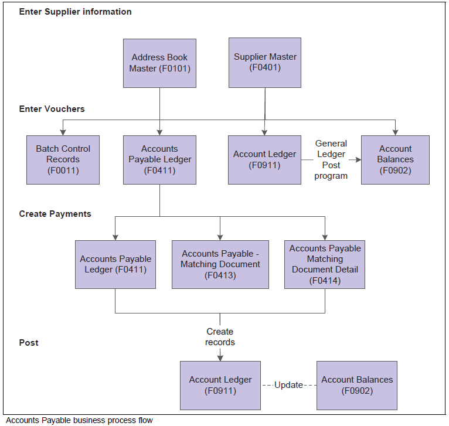
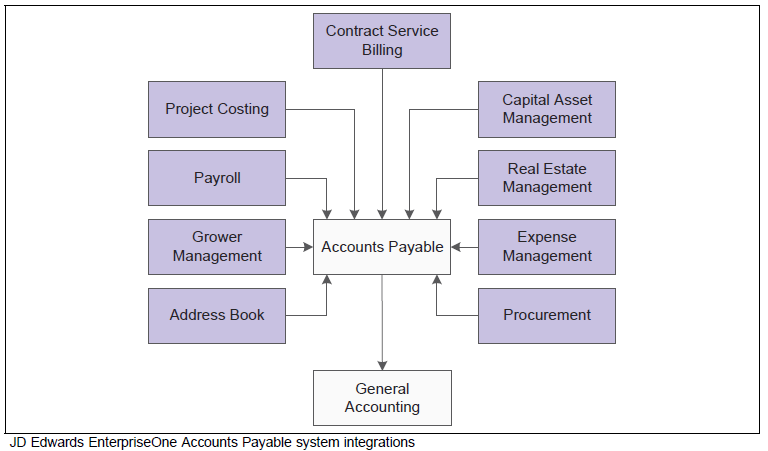

| Purpose |
| Accounts Payable Overview |
| Scope |
| Details |
| Accounts Payable Integrations |
| Overview of Accounts Payable Set Up |
| Set Up Accounts Payable Constants |
| Understand Document Company (KCO) versus Company (CO) |
| Reference To Other AP Set Up Instructions |
| Accounts Payable Overview Questions |
| Question 1: How is the company address number used in Accounts Payable? |
| Question 2: Will the AP offset method B (offset by batch) adversely affect payment reconciliation? |
An accounts payable department has many responsibilities to fulfill to ensure that payments to suppliers are made on time and the needs for flexibility in the organization are met:
This document is intended for EnterpriseOne users who are setting up the Accounts Payable module for use within their organization.
This process flow illustrates the Accounts Payable business processes:

The JD Edwards EnterpriseOne Accounts Payable system works with other JD Edwards EnterpriseOne systems to ensure that all payables transactions and information are fully integrated into accounts payable. This graphic illustrates the systems that integrate with the JD Edwards EnterpriseOne Accounts Payable system:

This section provides overviews of the JD Edwards EnterpriseOne Accounts Payable system setup and discusses how to:
Before using the JD Edwards EnterpriseOne Accounts Payable system, you need to define certain information that the system uses during processing. This table describes the setup information for the JD Edwards EnterpriseOne Accounts Payable system:
| Feature | Setup Task |
|---|---|
| Constants | Establish system basics, such as:
|
| User Defined Codes (UDCs) | Define customized codes, such as document types and payment status, that are appropriate for your business needs. |
| Next Numbers | Establish an automatic numbering system for documents. |
| Automatic Accounting Instructions (AAIs) | Set up AAI tables that the system uses to identify the appropriate account numbers when it automatically creates journal entries for transactions. |
| Payment Terms | Define payment terms codes, such as net due upon receipt, for easier voucher entry. |
Constants provide a basic framework for how your JD Edwards EnterpriseOne Accounts Payable system works, based on your business needs. Generally, one person sets up all constants. It is recommended that you do not change constants after they are set up because this might produce undesirable results. It is also recommended that you ensure that only authorized personnel can access and change accounts payable constants.
Constants for the JD Edwards EnterpriseOne Accounts Payable system include these options:
| Fields | Field Description |
|---|---|
| Batch Control Required (data dictionary item ICRP) | The Batch Control Required constant enables you to specify whether to track the total number and amount of a batch of vouchers. Turning on this constant enables you to verify the total amount expected against the total amount entered immediately after you enter each batch. |
| Manager Approval of Input (data dictionary item IARP) | The Manager Approval of Input constant enables you to specify whether management approval of batches is required before batches can be posted. |
| Automatic Offset Method (OFFP) | The Automatic Offset Method constant enables you to specify how the system makes offsetting entries to the Accounts Payable liability and discount accounts when you post vouchers to the general ledger. Three offset methods are available:
|
| Duplicate Invoice Number (DUIN) | The Invoice Number Editing constant enables you to set up your system so that it notifies you when it detects duplicate invoices. Duplicate invoices might occur when a supplier invoice is accidentally entered twice. You can enter one of these codes:
The system does not validate invoice numbers for vouchers with document type NO. These vouchers are created by the Generate Reimbursements program (R03B610). |
| Aging Days (AGP1-AGP5) | The columns on your aging reports are calculated based on the number of days in each time interval that you set up. |
Batch Control Set Up
When Batch Control is activated in the Accounts Payable Constants (P0000), a Batch Control (W0011F) form appears prior to entering transactions. Users are allowed to enter the Batch Date (data dictionary item DICJ), Batch Number (data dictionary item DICJ), Total Expected Amount (data dictionary item AICU) and Total Expected Documents (data dictionary item NDO). If the user does not enter data into the Batch Control (W0011F) form, the current date defaults into the Batch Date (DICJ) and the Batch Number (ICU) value is pulled from Next Numbers. The Total Expected Amount (AICU) and Total Expected Documents (NDO) fields remain blank or zero. When the transaction entry form is exited, the Batch Control (W0011F) form is returned and the Total Entered Amount (AICU) and Total Entered Documents (NDO) values are displayed. The user can compare the values expected against the values entered and correct any discrepancies. The fields on the Batch Control (W0011F) form are for informational purposes only and do not affect how the batch is processed.
The Notify Form
A new feature was added to the batch control process. When the transaction entry form is exited, a NOTIFY form appears if the program is still processing batch totals. The message displayed on the form states, "The batch is in the process of closing. If you would like to by-pass Batch Control, click the Cancel button, else click the Retry button to wait for the batch to completely close." The new form allows users the option to bypass the Batch Control form by pressing the Cancel button. Canceling the form does not affect any of the transactions entered into the batch, nor does it affect the batch status. If the Cancel button is clicked, the system stops processing the batch control calculation and does not update the Total Entered fields. To display the Batch Control form, press Retry. The totals will be calculated and the form will be displayed. Depending on the speed of the computer and the number of transactions entered into the batch, the Retry button may need to be pressed more than once.
Batch Control On Web Environments
Currently, Batch Control is not supported in thin or zero environments (i.e. WTS, HTML or Java) in Xe and ERP 8.0 releases though it works fine on fat clients in these releases. There are several Bugs related to enabling the functionality on the web in Xe and ERP8.0. The Bugs are included in ESUs, but also require certain paper fixes (Special Instructions) to implement the functionality. This requires extensive changes to the associated programs/business functions and the administration of these changes are not supported by Oracle Software Support (OSS). Please contact OSS for more information on Special Instructions. The Batch Control functionality for web has been implemented in 8.9 and subsequent releases.
To describe how the system uses the Document Company (KCO) and Company (CO) fields, how the system uses document company 00000 and company 00000, and how you can set up a default value to use for the company based on the user ID.
Explanation of Document Company field (KCO)
The Document Company is a number that the system uses in conjunction with the Document Number (DOC) and Document Type (DCT) fields to uniquely identify an original transaction such as a voucher, invoice, or journal entry. In other words, the system uses the document company as part of the document number to differentiate it from other documents. For example, if you have a PV voucher assigned document number 1234 for document company 00001, the system allows you to enter another PV voucher for document number 1234 for document company 00002. The system assigns the value of the Document Company based on the value of the Company that is entered on the transaction. If, however, you neglect to enter a valid company on the transaction, the system assigns 00000 to the Document Company field, which is a valid value.
Additionally, if you post AP or A/R transactions by batch, the system assigns document company 00000 on the automatic entry (AE) offset records that the system creates in the Account Ledger table (F0911). For example, if you have a batch of vouchers that include transactions for companies 00001, 00002, and 00003, and the offset method is set to batch, the system creates one record in F0911 and assigns the batch number as the document number, AE as the document type, and 00000 as the document company. If you use the Next Numbers by Company/Fiscal Year program (P00021) to assign document numbers, the system always uses the Document Company to retrieve the document number from the next number index that is set up. In Next Numbers by Company/Fiscal Year, 00000 is not a valid document company.
Explanation of Company field (CO)
The company is a number that identifies a specific organization, fund or other reporting entity. To use a company number, you must set it up in the Company Numbers & Names program (P00105). The company number that you use can only represent those reporting entities that have a complete balance sheet. Company 00000 should also be set up in Company Numbers & Names, but its purpose is to provide a default name to print on reports that include multiple companies. Various programs throughout the JD Edwards World systems use company 00000 differently; however, company 00000 can never be used as a company (i.e. you cannot establish a chart of accounts for company 00000), nor can it be assigned to the Company field on transactions. Company 00000 can also be used to provide a default record. For example, several of the automatic accounting instruction (AAI) items can be set up for company 00000, which the system uses as a default value to retrieve account numbers when it cannot locate a company-specific AAI item.
Setting Up a Default Value for Company
Starting at release 9.1, you can set up a user-specific default value for the Company (CO) field in the User Display Preferences program (P00923). For example, if you enter 00001 in the Company field for user KIMBANKS, the Company field on all transactions entered by KIMBANKS can be left blank and the system assigns the default value 00001.
Answer 1: If the company number in Work with Companies (P0010) is the same as the Address Book Number (F01012) for that company, you do not need to populate the Company Address Number field in P0010. For example:
Answer 2: If you use offset method B, the system will create one offset for each batch of transactions by trade account. This should have no effect on your bank reconciliation. Please note that if you have specific payment/bank reconciliation questions log a Service Request with Oracle Software Support for assistance.